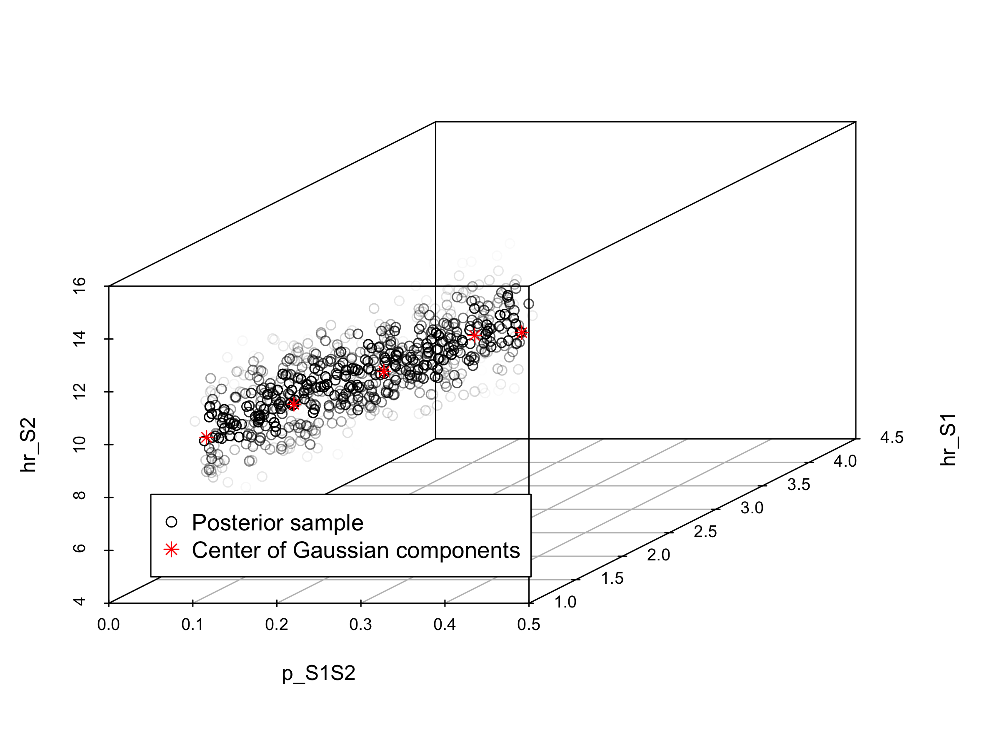
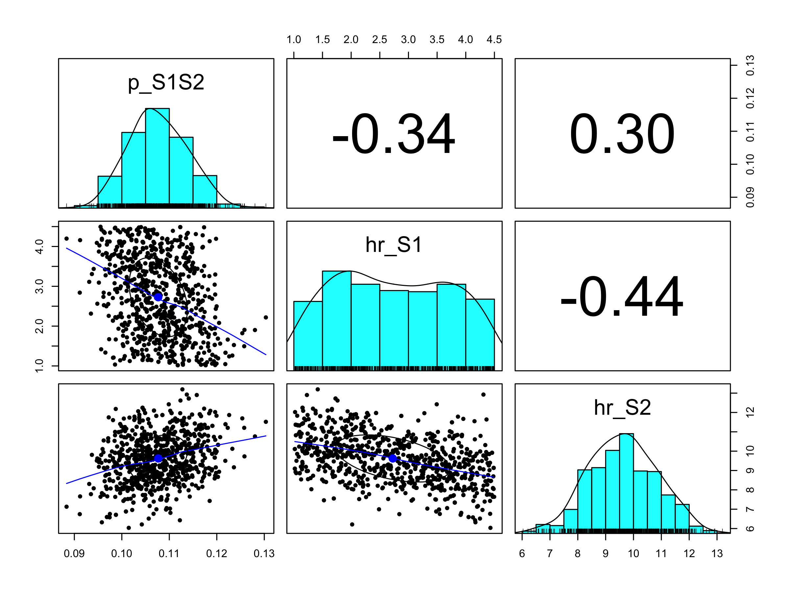

Chapter 3 Model calibration
In this third component, we calibrate unknown model parameters by matching model outputs to specified calibration targets. Specifically, we calibrate the Sick-Sicker model to match survival, prevalence and the proportion who are Sicker, among all those afflicted (Sick+Sicker). We used a Bayesian calibration approach using the incremental mixture importance sampling (IMIS) algorithm (Steele, Raftery, and Emond 2006), which has been used to calibrate health policy models Rutter et al. (2018). Bayesian methods allow us to quantify the uncertainty in the calibrated parameters even in the presence of non-identifiability (Alarid-Escudero et al. 2018). This analysis is coded in the 03_calibration.R file in the analysis folder. The target data is stored in the 03_calibration_targets.RData file. Similar to component 02 2, in the section 03.1 Load packages, we start by loading inputs and functions. In addition, we load the calibration targets data into the R workspace. In the next section, 03.2 Visualize targets, we plot each of the calibration targets with their confidence intervals.
In section 03.3 Run calibration algorithms, we set the parameters we need to calibrate to fixed values and test if the function calibration_out that produces model outputs corresponding to the calibration targets works. This function takes a vector of parameters that need to be calibrated and a list with all parameters of decision model and computes model outputs to be used for calibration routines.
## function (v_params_calib, l_params_all, v_target_times = c(10,
## 20, 30))
## {
## l_params_all <- update_param_list(l_params_all = l_params_all,
## params_updated = v_params_calib)
## v_times_notvalid <- setdiff(v_target_times, 0:l_params_all$n_t)
## if (length(v_times_notvalid) > 0) {
## stop("The calibration target times must be whole model cycles between 0 ",
## "and the model time horizon (n_t = ", l_params_all$n_t,
## "). ", "Not valid: ", paste(v_times_notvalid, collapse = ", "))
## }
## l_out_stm <- decision_model(l_params_all = l_params_all)
## v_rows_targets <- as.character(v_target_times)
## v_os <- 1 - l_out_stm$m_M[, "D"]
## v_sick <- rowSums(l_out_stm$m_M[, c("S1", "S2")])
## v_prev <- v_sick/v_os
## v_prop_S2 <- l_out_stm$m_M[, "S2"]/v_sick
## l_out <- list(Surv = v_os[v_rows_targets], Prev = v_prev[v_rows_targets],
## PropSicker = v_prop_S2[v_rows_targets])
## return(l_out)
## }
## <bytecode: 0x11d4cfdf0>
## <environment: namespace:darthpack>This function is informed by two argument v_params_calib and l_params_all. The vector v_params_calib contains the values of the three parameters of interest. The list l_params_all contains all parameters of the decision model. The placeholder values are replaced by v_params_calib and with these values the model is evaluated. Model evaluation takes place by running the decision_model function, described in component 02. The result in a new list with output of the model corresponding to the parameter values in the v_params_calib. With this new decision model output, the overall survival, disease prevalence and the proportion of Sicker in the Sick and Sicker states are calculated. The estimated values for these epidemiological outcomes at different timepoints are combined in a list called l_out produced but the calibration_out.
Once we make sure this code works, we specify the calibration parameters in section 03.3.1 Specify calibration parameters. These include setting the seed for the random number generation, specifying the number of random samples to obtain from the calibrated posterior distribution, the name of the input parameters and the range of these parameters that will inform the prior distributions of the calibrated parameters, and the name of the calibration targets: Surv, Prev, PropSicker.
In the next section, 03.3.2 Run IMIS algorithm, we calibrate the Sick-Sicker model with the IMIS algorithm. For this case-study, we assume a normal likelihood and uniform priors. For a more detailed description of IMIS for Bayesian calibration, different likelihood functions and prior distributions, we refer the reader to the tutorial for Bayesian calibration by Menzies et al. (Menzies et al. 2017). We use the IMIS function from the IMIS package that calls the functions likelihood, sample.prior and prior, to draw samples from the posterior distribution (Adrian Raftery and Le Bao 2012). The functions are specified in the 03_calibration_functions.R file in the R folder. For the IMIS function, we specify the incremental sample size at each iteration of IMIS, the desired posterior sample size at the resample stage, the maximum number of iterations in IMIS and the number of optimizers which could be 0. The function returns a list, which we call l_fit_imis, with the posterior samples, the diagnostic statistics at each IMIS iteration and the centers of Gaussian components (Adrian Raftery and Le Bao 2012). We store the posterior samples in the matrix m_calib_post.
df_posterior_summ. Table 3.1 shows the summary statistics of the posterior distribution.
| Mean | 2.5% | 50% | 97.5% | MAP | |
|---|---|---|---|---|---|
| p_S1S2 | 0.1076687 | 0.0964559 | 0.1073187 | 0.1196543 | 0.107841 |
| hr_S1 | 2.7261594 | 1.1010910 | 2.6790446 | 4.4020812 | 2.297053 |
| hr_S2 | 9.6232710 | 7.3427361 | 9.6461532 | 11.9533402 | 9.886776 |
In section 03.4.2 Visualization of posterior distribution, we generate a pairwise scatter plot of the calibrated parameters (Figure 3.2) and a 3D scatter plot of the joint posterior distribution (Figure 3.1). These figures are saved in the figs directory.

Figure 3.1: Joint posterior distribution

Figure 3.2: Pairwise posterior distribution of calibrated parameters
Finally, the posterior distribution and MAP estimate from the IMIS calibration are stored in the file 03_imis_output.RData. Storing this data as an .Rdata file allows to import the data in following sections without needing to re-run the calibration component.